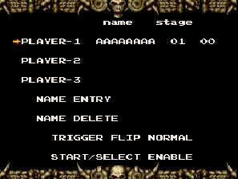
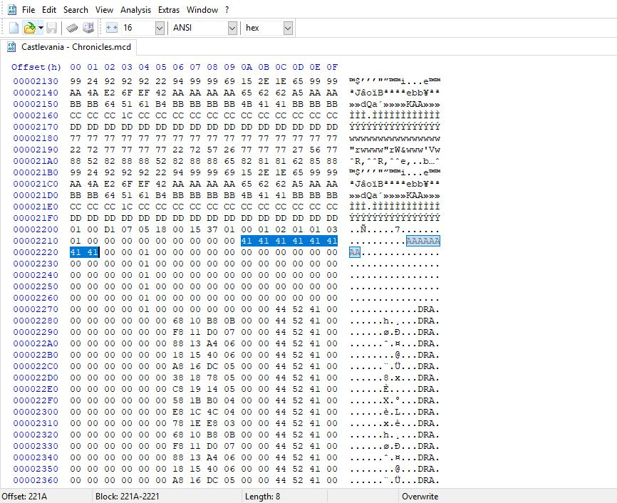
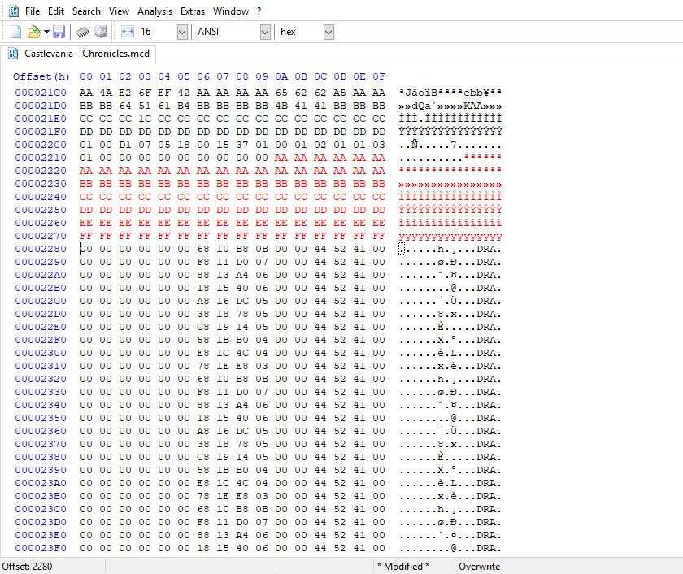
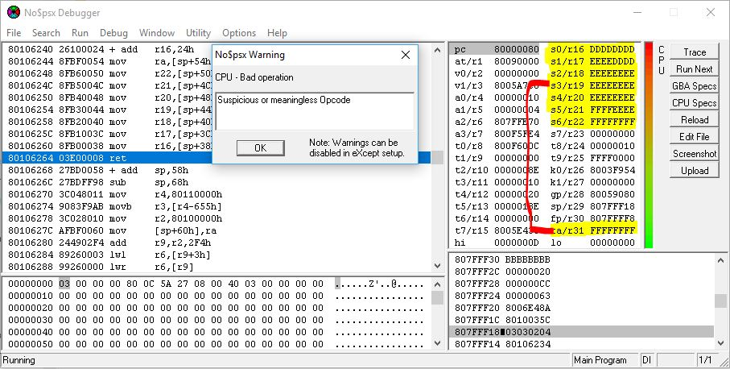
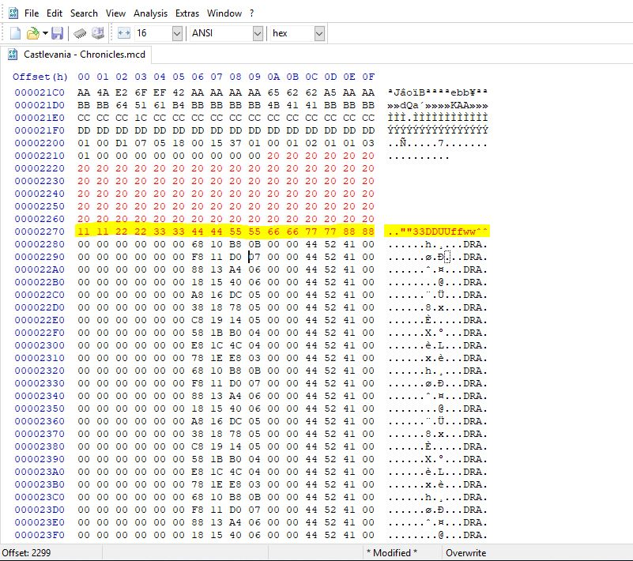
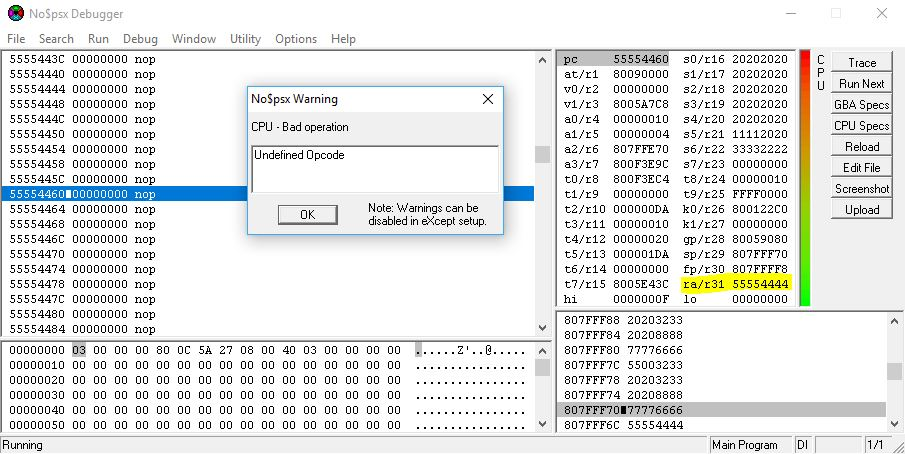
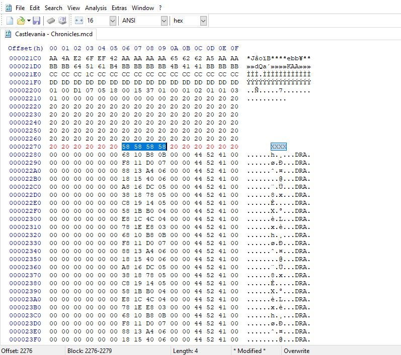
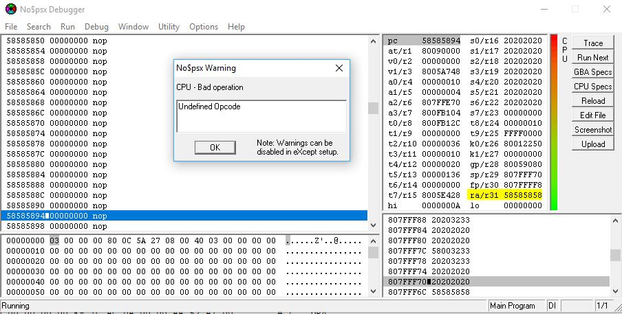

Introduction:
Over the years, there have been multiple vulnerabilities found for many PlayStation consoles and handhelds, like the PSP, PS Vita (and the PSTV, its miniaturised console counterpart), PS2, PS3, etc. Looking at how the original Sony PlayStation has been cracked (ASM ROMhacks, CD-Drive burning and POPS), there were no write-ups detailing the process of stack-smashing the savegames themselves on official retail discs.
But today, I wanted to share how I found stack smash vulnerabilities in savegames on the original PlayStation. This guide will also teach you the basics of finding flaws in games that run on MIPS processors. Without further ado, let's begin :D
Before we start:
You need know some things before you get started. Otherwise, you'll be going in blind doing this stuff.
- A crash isn't necessarily exploitable (as noted in my past write-up). A crash might be exploitable, depending on what's being overwritten or what's being messed with
- I suggest that you look up how stack-smashing works. To save time, let me Google that for you.
- Know that PS1 games are compiled to MIPS machine language. We'll mainly be focusing on getting control of the register $ra/r31, which is our return address. You can find more details on these registers here!
- Most or almost all PS1 games do not use checksums, nor do they have any type of ASLR (as far as I know).
- Some overflows in games can turn into integer overflows, which would be a bit of a pain to deal with but they're still exploitable (integer overflows will not be covered in this write-up).
Tools I used:
Now let's move on! You'll need the right tools to be able to get through this write-up if you're following along. Here are the tools I used:
- no$psx - A really useful emulator for the original PlayStation with debugging capabilities.
- HxD - I use this hex editor a lot, and it has helpful analysis features that we'll use in this guide.
- PS1 games - Of course you're going to need a game to do some research - one that you obtained a legitimate backup of by dumping yourself, of course :P
Picking a target:
For the sake of this article, we'll be looking for potential stack-smashing vulnerabilities. I usually start with games that have profile names or some type of username input like cars, clubs names, etc. It doesn't have to be strictly profile names, and there are some games that allow putting in your name if you achieve a high-score. Memory card names are another possible attack vector. Even if the string is short, you can still try.
So, I'm going to be using the game "Castlevania Chronicles" (This game is really good and you should actually play it) since there's 2 ways to actually stack-smash this game. So remember what to do:
- Look for profiles that allow you to set a custom name.
- Look for games that allow you to set a custom name on achieving a high score.
- Don't just edit a section of the save if you don't know what it's used for. Doing so may corrupt the save itself.
Attempting an overflow:
Now that you have the things you need, you are now ready to go ahead and edit start messing with savegames. Castlevania Chronicles comes with the Arranged/Original versions of the game. Both have separate profile name entities which makes it a dual win if you wanted exploit both versions of the game. If one doesn't work, there's a chance that the other will work.


Since the PS1 doesn't really have any checksums, you can pretty much freely edit the save. Let's start with a large string and see what happens when we open it in NO$PSX. We'll simply narrow things down to letters to pinpont what's overflowing and where.

Looking at the screenshot, we were given an exception error in NO$PSX!

Refining the Return Address:
Okay, so now we know that our game is vulnerable, let's refine our string to find the where the return address is being overwritten. This is a simple procedure since all you're doing is simplifiying the string. So what I did for this game is that I rewrote part of the string with 0x20 (the ' ' character for those of you that haven't memorised the ASCII encoding scheme) and focused on the FF(s). For simplicity, I'll rewrite those FF(s) to numeric hexidecimals. This should be enough to pinpoint where our return should be placed as shown below.

Let's now run this in NO$PSX and see what we get. Also, remember that the CPU registers are 4 bytes long. As the game runs, our refined string should be read in the return address. From there, we have basically what we needed to overwrite.
And what do you see... if you look at the register?

Defining our Return Address:
Let's go back into HxD to trail our return address.

This won't be covered in this writeup since similar jump addresses can be explained. Plus, real code execution hasn't been achieved yet while I was doing this. But let's save the memory save and head right back into NO$PSX.

As mentioned before, this can be used to jump to our payload if we wanted to get demo code working. But now, we can call this simple exploit "CastleSploit" :D.
Closing:
Hopefully this article/writeup gave you an overview on stack smashing games running on MIPS processors. Eventually, I would like to see this being used in action to actually execute some demo code. Hopefully I can get this to work on my own as well and update this guide if needed. Also, this can be applied to the PSP since its games are also coded for MIPS processors. You can find neat writeups on those somewhere.
If you have any questions, feel free to hit me up on Twitter @ChampionLeake79 and I'll respond to you as fast as I can. Happpy hacking!! :D
Credits:
I would like to thank all of the following:- Jhynjhiruu - Your friendly neighbourhood Grammarly™. Big thanks for improving the grammar (note: there's only so much that can be done; you should have seen this before I started!).
- @AcidSnakeDev, @freakler94, @qwikrazor87- Inspiriation on Sony PSP (PS1-mini hacking)
- St4rkDev - Helpful friend in using integer overflows as a way to take over some registers
- Everyone else who contributed to giving me helpful advice